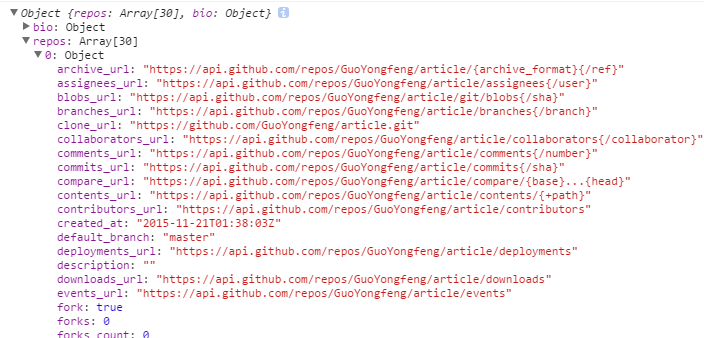

使用axios请求github API的数据
axios: Promise based HTTP client for the browser and node.js axios是一个能同时运行于浏览器端和nodejs的AJAX/HTTP方法/库
我们将用axios来请求github API的接口数据，用于组件的展示。下载：
$ npm install --save axios
首先写一个公共的工具函数来请求github上用户信息和仓库信息相关的数据。
$ cd app && mdkir util
$ cd util && touch helper.js
代码清单：app/util/helper.js
import axios from 'axios'
// axios用法很简单，请参考这里：https://github.com/mzabriskie/axios
/**
* 传入用户名，获取用户的github上仓库信息
* @param {[type]} username [description]
* @return {[type]} [description]
*/
function getRepos(username){
// 这里使用了 ES6 的字符串模板
return axios.get(`https://api.github.com/users/${username}/repos`);
}
/**
* 传入用户名，获取用户github上的基本信息
* @param {[type]} username [description]
* @return {[type]} [description]
*/
function getUserInfo(username){
return axios.get(`https://api.github.com/users/${username}`);
}
export default function getGithubInfo(username){
// 将请求回来的数据做了一个 merge 操作
return axios.all([
getRepos(username),
getUserInfo(username)
])
.then((arr) => ({
repos: arr[0].data,
bio: arr[1].data}
));
}
上面的代码中，我们使用axios发送请求到
https://api.github.com，如果不太清楚通过github API获取数据的话，没关系，请到这里看一下：https://developer.github.com/v3。同时访问链接感受下：https://api.github.com/users/guoyongfeng。
现在我们在Profile组件中引入这个工具函数，并且传入用户名，查看返回的数据。
import React, { Component } from 'react';
import { UserProfile, UserRepos, Notes } from '../../components';
import { mixin } from 'core-decorators';
import ReactFireMixin from 'reactfire';
import Firebase from 'firebase';
import getGithubInfo from '../../util/helper';
@mixin(ReactFireMixin)
class Profile extends Component {
state = {
notes: ['1', '2', '3'],
bio: {
name: 'guoyongfeng'
},
repos: ['a', 'b', 'c']
}
componentDidMount(){
// 为了读写数据，我们首先创建一个firebase数据库的引用
this.ref = new Firebase('https://github-note-taker.firebaseio.com/');
// 调用child来往引用地址后面追加请求，获取数据
var childRef = this.ref.child(this.props.params.username);
// 将获取的数据转换成数组并且赋给this.state.notes
this.bindAsArray(childRef, 'notes');
getGithubInfo( this.props.params.username )
.then( ( data ) => {
// 测试一下传入用户名后返回的数据
console.log( data );
// 更新state数据
this.setState({
bio: data.bio,
repos: data.repos
})
});
}
componentWillUnMount(){
this.unbind('notes');
}
render(){
return (
<div className="row">
<div className="col-md-4">
<UserProfile
username={this.props.params.username}
bio={this.state.bio} />
</div>
<div className="col-md-4">
<UserRepos
username={this.props.params.username}
repos={this.state.repos} />
</div>
<div className="col-md-4">
<Notes
username={this.props.params.username}
notes={this.state.notes} />
</div>
</div>
)
}
}
export default Profile
这里运行的时候会有个报错，以为之前在UserRepos组件中有这样一行代码：
<p> REPOS: {this.props.repos}</p>
repos是一个对象数组，直接展示会报错，暂时先去掉这行代码。
然后看浏览器返回的数据。
